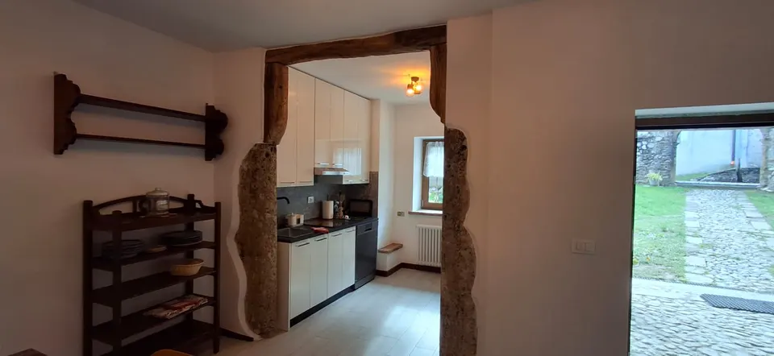

Casa Vanda Ortensia
Wohnung im Erdgeschoss der Villa in Viaso, mit Küche, kleinem Wohnzimmer, einem Doppel- und einem Einzelzimmer, für bis zu 4 Gäste.
Ortensia liegt im Erdgeschoss von Casa Vanda, im ruhigen Ortsteil Viaso: eine einladende, gemütliche Wohnung für einen erholsamen Aufenthalt in der authentischen Atmosphäre der Gegend.
Sie hat eine Küche mit Wohnbereich – praktisch und angenehm zum Kochen und Beisammensein –, ein Doppelzimmer, ein Einzelzimmer und ein hübsches kleines Wohnzimmer zum Lesen oder Ausruhen. Die originalen Balken und Steinmauern des Hauses rahmen die Räume, und durch die Tür gelangt man in den gepflasterten Innenhof mit Garten.
Durch ihre Aufteilung ist sie ideal für Paare, kleine Familien und alle, die sich auch fern von zu Hause wie daheim fühlen möchten.
Die Villa Vanda, von der Gemeinde Socchieve als historisch wertvolles Gebäude anerkannt, stammt aus der zweiten Hälfte des 18. Jahrhunderts: typisch karnische Architektur, Steinbögen und hölzerne Laubengänge (linde), von denen sich ein herrlicher Blick öffnet. Sie liegt in Viaso, einem ruhigen, sonnigen Ortsteil im Grünen, wo das Leben im langsamen Takt der Natur verläuft. Den Gästen stehen ein kleiner Innenhof mit Garten und reservierte Parkplätze direkt am Eingang zur Verfügung.
- Küche
- Geschirrspüler
- Waschmaschine
- Eigenes Bad mit Dusche
- Haartrockner
- TV
- WLAN
8 Fotos von Casa Vanda Ortensia
Viaso, ein Ortsteil von Socchieve
Viaso liegt dort, wo sich die Wege zwischen den Ortsteilen der Gemeinde kreuzen, und überrascht damit, wie gut es verborgen bleibt, obwohl es ganz nah bei Socchieve liegt. Die Mountainbike-Strecke führt hindurch, und mit dem Restaurant La Baita ist es ein sicherer Hafen für Genießer.